menua
eta
menua
eta  argiaren panela daude.
argiaren panela daude.
| [ << ] | [ >> ] | [Top] | [Contents] | [Index] | [ ? ] |
Leiho honek denbora-lerroaren irteera bistaratzen du. Konposaketako eragiketetan edo denbora-lerroaren irteerako itxurari eragiten dien eragiketetan erabiltzen da interfaze hau. Konposaketan landutako eragiketek denbora-lerroari eragiten diete, baina ez dute klipetan eragiten.
Bideoaren irteerak nabigatzeko hainbat funtzio ditu. Bideoaren irteeraren tamaina leihoaren tamainara blokeatuta egon daiteke, edo desblokeatuta korritze-barrekin nabigatzeko. Bideoaren irteeraren zooma handitu edo txikiagotu, edota panoramikoa egin daiteke. Modu honetan bideoaren irteeran nabigatzeak ez du errendatutako irteeran eragiten; konposaketa-leihoko ikuspegia aldatzen du soilik.
Leihoaren tamainatik desblokeatzen bada, egin klik saguaren eskuineko botoiarekin eta arrastatu bideoaren panoramikoaren ikuspegian zehar.
+ eta - teklak sakatu bideoaren irteeraren zooma handitzeko edo txikiagotzeko.
Bideoaren irteeraren azpian leiho nagusian aurkitzen diren funtzio askoren
kopiak daude. Gainera, bertan zoomaren menua
eta argiaren panela daude.
Zoomaren menuan erabilgarriak diren zoomaren elementu guztiak daude, eta Automatikoa (edo Auto) aukera erabiliz, bideoa leihoaren tamainara blokeatzen da. Zoomaren menuak ez dio leihoaren tamainari eragiten.
Argiaren panela gorriz jartzen da errendatzen ari denean. Oso erabilgarria da irteera unekoa al den jakiteko.
Saguaren eskuineko botoiarekin bideoaren irteeran klik egitean, laster-menu bat bistaratzen da zoomaren maila guztiak zerrendatuz, eta bestelako aukera batzuk eskainiz. Zoomaren mailen kasuan leiho osoa aldatzen da tamainaz, eta ez bideoa soilik.
Berrezarri kamera eta Berrezarri proiektorea aukerek kamera eta proiektorea zentratzen dute. See section Konposatzea.
Ezkutatu kontrolak aukerak gauza guztiak ezkutatzen ditu, bideoa izan ezik.
Bideoaren irteeraren ezkerretara konposaketa-leihoaren tresna-barra berezia aurkitzen da:
Konposaketako irteeran klik egitean aldaketak gertatzea desgaitzen da. Pistaren gainean jartzen den geruza gehigarria da, nahigabeko aldaketak egitea saihesteko.
Tresna honek  konposaketaren irteeraren
zooma handitu eta txikiagotzen du leihoa tamainaz aldatu gabe. Bideoaren irteera
leihoaren tamainara blokeatuta badago, lupan klik egitean desblokeatu egiten da
eta korritze-barrak agertzen dira nabigatzeko.
konposaketaren irteeraren
zooma handitu eta txikiagotzen du leihoa tamainaz aldatu gabe. Bideoaren irteera
leihoaren tamainara blokeatuta badago, lupan klik egitean desblokeatu egiten da
eta korritze-barrak agertzen dira nabigatzeko.
Saguaren ezkerreko botoiarekin bideoan klik egitean zooma handitu egiten da.
Ktrl tekla sakatuta dagoela saguaren ezkerreko botoiarekin bideoan klik egitean
zooma txikiagotu egiten da.
Saguaren gurpila biratzean zooma handitu eta txikiagotzen da.
Tresna honek, , muntaketaren maskara tresna bistaratzen du.
Irakurri See section Maskarak atala. Gaitu  tresnaren
informazioaren leihoa tresna honen aukerak ikusteko.
tresnaren
informazioaren leihoa tresna honen aukerak ikusteko.
Tresna honek,  , muntaketaren kamera tresna bistaratzen du.
Irakurri See section Kamera eta proiektorea atala. Gaitu tresnaren
informazioaren leihoa tresna honen aukerak ikusteko.
, muntaketaren kamera tresna bistaratzen du.
Irakurri See section Kamera eta proiektorea atala. Gaitu tresnaren
informazioaren leihoa tresna honen aukerak ikusteko.
Tresna honek,  , muntaketaren proiektorea tresna bistaratzen du.
Irakurri See section Kamera eta proiektorea atala. Gaitu tresnaren
informazioaren leihoa tresna honen aukerak ikusteko.
, muntaketaren proiektorea tresna bistaratzen du.
Irakurri See section Kamera eta proiektorea atala. Gaitu tresnaren
informazioaren leihoa tresna honen aukerak ikusteko.
Tresna honek,  , muntaketaren mozteko tresna bistaratzen du.
Irakurri See section Mozketa atala. Gaitu tresnaren
informazioaren leihoa tresna honen aukerak ikusteko.
, muntaketaren mozteko tresna bistaratzen du.
Irakurri See section Mozketa atala. Gaitu tresnaren
informazioaren leihoa tresna honen aukerak ikusteko.
Kolore-hautatzailea tresna bistaratzen du. Kolore-hautatzaileak bere azpian dagoen
edozein kolore bistaratzen du, eta aldi baterako arean gordetzen du.
Tresnaren informazioaren leihoa () gaituz
unean hautatutako kolorearen informazioa azaltzen da. Egin klik bideoaren
irteerako edozein posiziotan puntu horretako kolorea hautatzeko.
Kolore-hautatzaileak koloreen informazioa bistaratzeaz gain, bere balioak
hainbat efektutan erabil daitezke. Efektu desberdinek kolore-hautatzailea
modu desberdinetan kudeatzen dute.
Tresna honen botoiak konposaketako
beste kontrolatzaileekin batera funtzionatzen du soilik. Konposaketako
zein kontrol aktibatuta dagoen arabera, txandakatzeko botoiak
kontrolari dagokion elkarrizketa-koadroa aktibatzen edo desaktibatzen du.
Elkarrizketa-koadroa duten kontrolak honakoak dira:
Tresna honek, , eskualde seguruak marrazten ditu bideoaren irteeran. Honek ez du inolako eraginik errendatutako irteeran. Irakurri See section Eskualde seguruak atala.
Cinelerra programak duen tamainaren zati handia konposaketa arloari dagokio. Bideoaren pantailan hizkien kutxa kentzean, konposatzen ari zara. Bideoaren bereizmena aldatzean, zatitutako pantaila sortuz, eta klipak piskanaka agertzea edo desagertzea ere Cinelerra-ren konposaketako eragiketak dira. Eragiketa bat konposaketakoa den edo ez detektatzen du Cinelerra-k, eta behar denean soilik deitzen dio konposaketako motorrari. Bestela, hardwarean dagoen dekodetzailerik azkarrena erabiltzen du.
Konposaketako eragiketak denbora-lerroan eta Konposaketa-leihoan gertatzen dira. Baliabideen leihoan lasterbideak daude konposaketako atributu batzuk aldatzeko. Denbora-lerroan bideo-fitxategi batzuk daudenean, konposaketako leihoa leku egokia da konposaketak probatzeko.
Konposaketa leihoan, funtziorik garrantzitsuenak
kamera eta
proiektorea botoiak dira.
Hauek kameraren eta proiektorearen eragiketak kontrolatzen dute.
Cinelerra-ren konposaketako errutinek "aldi bateko" kopia erabiltzen dute.
"Aldi batekoa" memorian kokatutako bideoaren fotograma bat da, grafikoen
prozesu guztiak lantzen diren lekua da. Cinelerra-ren konposaketako
kanalizazioan, kamerak zehazten du bideoaren iturburuko zein lekutatik
kopiatzen den "aldi batekora". Proiektoreak berriz "aldi bateko" kopia
irteerako zein lekutan kopiatzen den zehazten du.
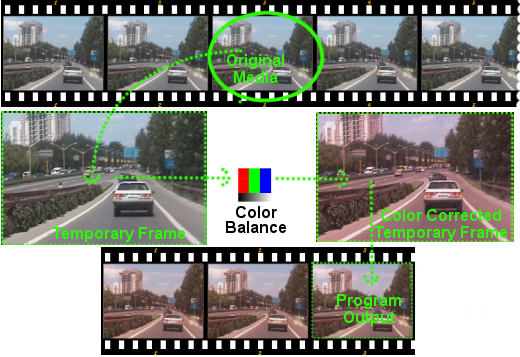
Prozesua honen antzekoa da: demagun aldiko filma baten fotograma bat eskaneatzen dugula, gero eskaneatutako irudia digitalki ikutzen dugula (GIMP bezalako tresna batekin adibidez) iragazki batzuekin. Iragazkiekin irudia eraldatutakoan (kolorearen zuzenketa adib.) irudia filme berri batean txertatzen dugu, jatorrizko filmaren 'eraldatutako' filma berri bat sortuz.
Pista bakoitzak "aldi bateko" desberdina du, pistaren tamainak definitutakoa. Pistak tamainaz aldatzean pantailetan zatitu, panoramikoak jarri eta zoomak egin ditzakezu.
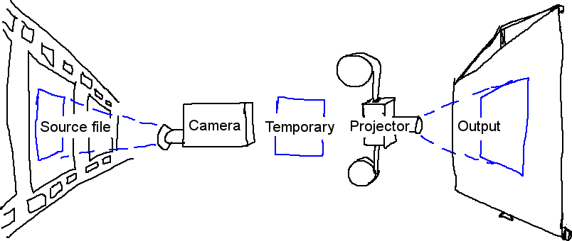
Visual representation of the compositing pipeline
Konposaketa-leihoan kamera eta proiektoreakin muntaketa lantzean, Grabatu aktibatuta duen aurreneko pista izango da eragina jasango duena. Berdin dio pista erabat gardena bada, eragina jasango duena izaten jarraituko du. Bideoaren hainbat pista egonez gero, pista bat hautatzeko modurik errazena pistaren grabazioko ikonoan Maius+klik egitea da. Honela pista hori isolatzen da.
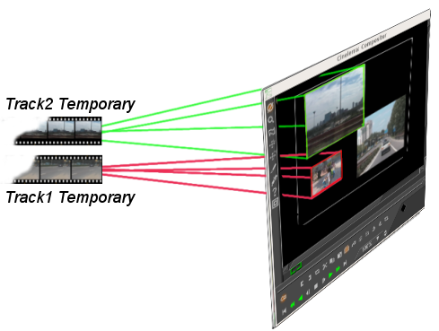
Proiektorearen helburua "aldi bateko" edukia proiektuaren irteeran jartzea da. Proiektorearen xedea hainbat pistetako iturburuak hartu eta amaierako irteerako pistan konposatzea da.
Proiektorearen fotograma-lerrokatzea kameraren ikuseremuaren berdina da, proiektorearen fotograma-lerrokatzeak ordea "aldi bateko" bakoitzaren edukia irteerako oihalaren zein posiziotan jarri behar den gidatzen du.
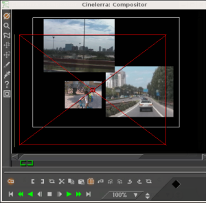
Konposaketa-leihoan Proiektorea botoia gaitzean, proiektorearen muntaketa moduan jartzen zara. Gida-koadro bat agertzen da bideoaren leihoan. Gida-koadroa arrastatzean bideoaren leihoko edozein posiziora mugitzen da, bideoarekin batera zorionez. Bideoaren leihoan Maius+arrastatzean gida-koadroa handitu eta txikiagotzen da bideoarekin batera. Behin proiektorearekin bideoa kokatutakoan, kamerarekin jolasean hasteko prest zaude.
Hautatu Kamera botoia kameraren
muntaketa moduan jartzeko. Modu honetan, gida-koadroak kamera zein posiziotan
dagoen erakusten du kameraren iraganeko eta etorkizuneko posizioekiko,
baina ez non kokatzen den bideoaren iturburuarekiko. Konposaketa-leihoan
kameraren koadroa arrastatzean kutxa ez da mugitzen, horren ordez bideoaren
kokalekua aldatzen du koadroaren barruan.
Ikuseremua kameraren leiho bat da, eskaneatuko den bideoaren iturburuaren area enkoadratzen duena. Ikuseremua gurutze diagonala duen marko gorri batekin adierazten da.
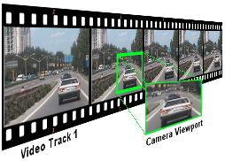
Ikuseremua
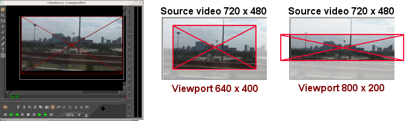
Ikuseremuaren tamainak
Ikuseremuaren tamaina uneko pistaren tamainarekin zehazten da. Ikuseremu txikiago batek (640x400) area txikiagoa kapturatzen du. Ikuseremu handiagoak (800x200) bideoaren iturburuaren baino area handiagoa kapturatzen du, eta tarte hutsak hutsunearekin betetzen ditu.
Behin zure ikuseremua definitutakoan, oraindik bideoaren iturburuaren (interesatuta zauden) arearen gainean jarri behar duzu kamera. Kameraren kokalekua kontrolatzeko:
Konposaketa-leihoko ikuseremuaren gainean arrastatzean (nahiz eta hasieran intuizioaren aurka joan) ikuseremua ez da mugitzen, kameraren kokalekuaren azpian dagoen bideoaren area baizik (mugitzen ari den kamera digital baten irteera ikusten ariko bazina bezala).
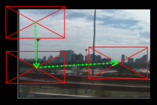
Konposaketa-leihoan ikuseremua beti erakusten
da zentratuta, bere azpian dagoen bideoa mugitzen da
Adibidez, arrastatu kamera behera. Ikuseremua bideoan beherantz mugitzen ari da, bere bidea bideoan beherantz doala erakutsiz, baina konposaketa-leihoan (erabiltzailearen ikuspegitik) bideoa igotzen ari dela ikusten da. Kamera eskuinera arrastatzean, bideoa ezkerrerantz doala dirudi, eta abar.
Oharra: gida-koadroak kamera zein posiziotan dagoen erakusten du kameraren iraganeko eta etorkizuneko posizioekiko, baina ez non kokatzen den bideoaren iturburuarekiko.
Konposaketa-leihoan, kameraren eta proiektorearen aukeren laster-menua dago. Saguaren eskuineko botoiarekin egin klik konposaketa-leihoko bideoaren zati batean menua bistaratzeko.
Kamerak eta proiektoreak lasterbideak dituzte eragiketak lantzeko, baina
lasterbide hauek ez dira agertzen laster-menuan eta ez daude bideoan adierazita.
Tresnaren leihoan atzitzen dira. Konposaketa-leihoko eragiketa gehienek dute
tresnaren leihoa, eta bistaratzeko galdera
ikurra gaitu behar da.
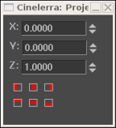
Kameraren eta proiektorea tresnen informazio-leihoa
Kamera eta proiektorearen kasuan, tresnaren leihoak x, y eta z koordenatuak erakusten ditu. Koordenatu bakoitzak bi gezi ditu bere balioa handitzeko edo gutxitzeko (testu gisa ere eremu bakoitzaren balioa ezar daiteke). Koordenatuen balioekin kamera eta proiektorearen posizioa zehaz dezakezu. 9 lerrokadura mota definituta daude kamera eta proiektorea errazago kokatzeko. Lerrokadura ospetsuenetarikoa goi-ezkerreko proiekzioa erabiltzea da irudia txikiagotu ondoren. Lerrokadura hau bideoaren tamaina txikiagotzen denean erabiltzen da aspektu-erlazioaren doiketarekin.
 Eskuinean
Eskuinean
 Goian
Goian
 Zentratu bertikalki
Zentratu bertikalki
Translazioaren efektuak aspektu-erlazioaren bihurketa eta txikiagotzea aldi berean lantzea uzten du. Errazagoa da ordea txikiagotutako bideoa "aldi batekoaren" goi-ezkerrean jartzen bada, zentruan jarri ordez. Pistaren tamaina bideoaren jatorrizko tamainara ezartzen da eta kamera zentratu egiten da. Irteeraren tamaina txikiagotutako bideoaren tamainara ezartzen da. Efekturik gabe, bideoaren enkuadratutako zati zentrala irteeran ekoizten da.
Translazioaren efektua bideoaren pistaren gainean jaregiten da. Translazio efektuaren sarrerako dimentsioak jatorrizko tamainara ezartzen dira, eta irteerako dimentsioak tamaina txikiagotzeko ezartzen dira. Txikiagotutako bideoa proiektoreak erakusten duen azpiatalaren zentruan jartzeko Irteerako X eta Irteerako Y desplazamenduak behar dira, kalkulu konplikatuak erabiliz. Horren ordez, utzi Irteerako X eta Irteerako Y desplazamenduak 0 balioarekin, eta erabili proiektorea tresnaren leihoa.
hautatuz lerrokatu ezkerrera, eta botoiarekin goian lerrokatuz, proiektoreak "aldi bateko" goi-ezkerreko ertzeko txikiagotutako irudia bistaratuko du irteeraren zentruan.
Maskarak bideoaren eskualde bat hautatzen du bistaratzeko edo ezkutatzeko. Maskarak beste efektuekin batera erabiltzen dira fotogramaren eskualde batean isolatzeko efektua. Bideo baten pistaren kopiak atzerapen piskat izan dezake eta kopia horren area batzuk maskararik gabe bistaratu, kopia batek interferentziak sortzen dituen areetan baina beste kopia batek ez. Fotograma baten azpiatal batek kolore zuzenketa behar dezake, baina ez beste batean. Maskara bat kolorea zuzendu zaion pista baten azpiatal bati aplika daiteke, eta ez beste batean. Mikrofonoen danbadak, hegazkinen zarata edo etxeko beste batzuen ahotsak kentzeko maskarak erabiltzen dira.
Konposaketako kanalizazioaren ordenak badu zerikusirik maskarekin egin beharrekoekin. Batizpat, maskarak "aldi batekoan" lantzen dira efektuen ondoren eta proiektorearen aurretik. Hainbat pista lotu daitezke maskaratutako pista batekin, eta maskara berdinarekin proiektatu.
Konposaketako kanalizazioaren grafikoak orain maskararen egoera dauka. Pista bakoitzak 8 maskara eduki ditzake. Maskara bakoitza bereiztuta definitzen da, nahiz eta bakoitzak antzeko eragiketa (gehiketa edo kenketa) landu.
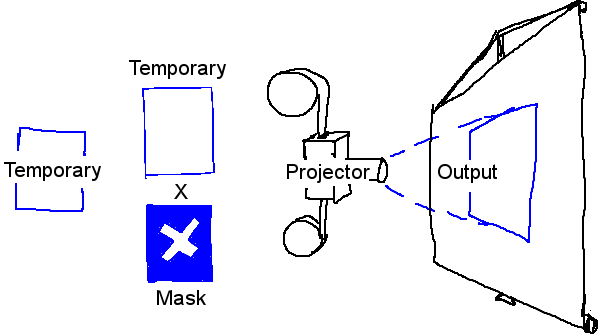
Konposaketako kanalizazioa maskarekin
Maskara bat definitzeko, joan Konposaketa-leihora eta gaitu maskara txandakatzailea. Orain kokatu bideoaren gainean eta klik eginez arrastatu.
GARRANTZITSUA: gako-fotograma automatikoak (irakurri Gako-fotograma automatikoak atala) hautatu behar dituzu maskara denboran zehar mugitzeko. Ez baduzu gako-fotograma automatikorik hautatzen, maskararen posizioa berdina izango da, nahiz eta denbora-lerroko leku desberdinetan editatu.
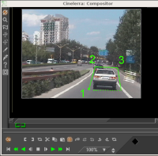
Egin klik irudiaren zati batean eta arrastatu maskararen puntu berri bakoitza sortzeko. Nahiz eta Bezier kurbaren portaera estandarra ez izan, maskararen interfaze honek maskararen efektua izango dena denbora errealean lantzen du. Maskararen puntu bakoitza sortzean kurba malgu bat zabaltzen da.
Behin puntuak definituta, Ktrl+arrastatuz lekuz alda daitezke ertzaren inguruan.
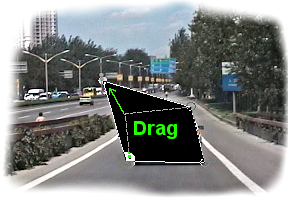
Ktrl+arrastatzeak existitzen diren puntuak lekuz aldatzea
uzten dizu, maskararen forma aldatuz
Honek, hala ere, ez du kurba leuntzen. Bezier-en kurbaren sarrerako/irteerako puntuak atzitzeko erabili Maius+arrastatu ertzaren inguruan. Gero sarrerako edo irteerako puntuaren inguruan Maius+arrastatzean puntua lekuz aldatuko da.
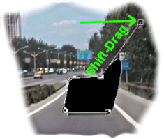
Maius+arrastatzeak Bezier-en heldulekuak aktibatzen ditu
maskararen puntuen artean kurbak sortzeko
Azkenik, maskara duzunean, maskara ALT+arrastatzean pieza bakar baten antzera lekuz alda daiteke. Cinelerra-n maskara editatzea Gimp-en maskarak editatzearen antzekoa da, kasu honetan ordea maskararen efektua beti dago aktibatuta.
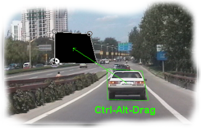
Ktrl+ALT+arrastatzeak maskara osoa lekuz aldatzen
du pantailan
Maskarek parametro asko dituzte, bideoan adierazten ez direnak. Parametro hauek
maskara tresnaren leihoan agertzen dira. Maskararen txandakatzailea
nabarmenduta dagoenean, galdera
ikurra hautatuz maskararen aukerak bistaratzen dira.
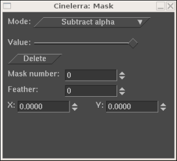
Maskararen aukeren leihoa
Maskararen moduak zehazten du maskarak datuak ezabatzen dituen edo datuak bistaratzen dituen. Kenketako modua bada, bideoa desagertzen da. Gehiketako moduan egonez gero, bideoa agertu eta maskaratik kanpo dagoen guztia desagertzen da.
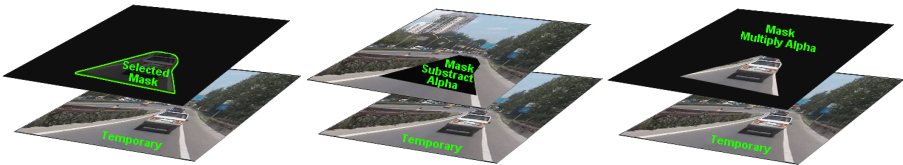
Maskaren modua
Maskararen balioak zehazten du gehiketaren edo kenketaren opakotasuna. Kenketako moduan, balio altuagoek alfa gehiago kentzen dute. Gehiketa moduan, balio altuagoek maskararen eskualdea distiratsuagoa bihurtzen dute, maskaratik kanpo gelditzen dena beti ezkutatzen delarik.
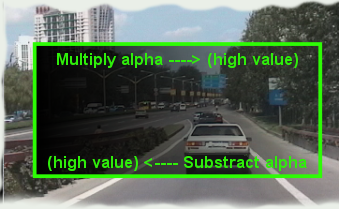
Maskararen balioa
Maskararen zenbakiak zehazten du 8 maskaretatik zein editatzen ari zaren. Gogoratu pista bakoitzak gehienez 8 maskara dituela. Konposaketa-leihoan klik egin eta arrastatzean, maskaretariko bat soilik editatzen ari zara. Aldatu maskararen zenbakiaren balioa beste maskara bat editatzeko. Aurreko maskara oraindik aktibo jarraitzen du, baina unean hautatutako maskararen kurba dago soilik ikusgai.
Hainbat maskara erabiltzen direnean, beraien efektuak EDO (OR) eragiketarekin batzen dira. Pista bateko maskara bakoitzak balio eta modu berdina erabiltzen du.
Maskara baten ertzak gogorrak dira lehenetsi gisa, ez da ohizkoa horrela nahi izatea. Difuminatu parametroak zehazten du maskara zenbat pixelekin difuminatuko den. Honek ertz leunagoak sortzen ditu, baina denbora gehiago behar izaten du errendatzeko.
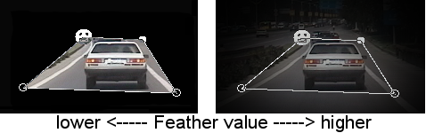
Difuminatu parametroa
Azkenik, parametro batzuk uneko maskararen puntu bakarrari eragiten diote, maskara osoari eragin ordez. Hauek Ezabatu, x eta y dira. Puntu aktiboa konposaketa-leihoan arrastatutako azken puntuak definitzen du. Edozein puntu aktiba daiteke, bere inguruan Ktrl+klik eginez erakuslea mugitu gabe. Puntu bat aktibatuta dagoela, Ezabatu parametroak puntua ezabatzen du, eta x, y parametroek posizioz aldatzen dute balio numerikoekin.
Mozketak irteeraren dimentsioen eta proiektorearen balioak aldatzen ditu irudiaren area
ikusgaia murrizteko. Konposaketa-leihoan gaitu mozketa
txandakaria eta tresnaren leihoa
Mozketa kontrolaren elkarrizketa-koadroa bistaratzeko.
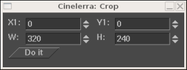
Mozketa kontrolaren elkarrizketa-koadroa
Egin klik eta arrastatu bideoan mozketaren area definitzeko. Honek laukizuzen bat marraztuko du bideoaren gainean. Egin klik eta arrastatu bideoaren edozein posiziotan laukizuzen berri bat definitzeko. Egin klik eta arrastatu laukizuzenaren edozein ertzetan ertza posizioz aldatzeko.
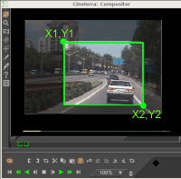
Mozketaren area definituta
Laukizuzena tamainaz aldatu gabe edozein posiziora aldatzeko ALT+egin klik mozketako laukizuzenean.
Tresnaren leihoak koordenatuen sarrera testuz zehaztea uzten dizu, eta mozketaren eragiketa lantzen du. Laukizuzena posizio egokian dagoela sakatu tresnaren leihoan dagoen Egin ezazu botoia mozketaren eragiketa lantzeko.
Oharra: mozketaren elkarrizketa-koadroan agertzen diren X1,Y1 eta X2,Y2 koordenatuek testu gisa balioak sartzea uzten dute (mozketaren laukizuzenaren goi-ezkerreko eta behe-eskuineko koordenatuak definitzen dituzte).
Kontsumitzaileen pantailek irudiaren ertzak mozten dituzte, eta mozketako eskualdea ez da beti karratua izaten, konposaketa-leihoan agertzen den bezala. Ertz hauek mozketa bertikala gerta daitezkeela adierazten dute. Ertz hauek bistaratzeko gaitu eskualde seguruak txandakaria. Mantendu tituluak barneko laukizuzenaren barruan eta ekintza kanpoko laukizuzenaren barruan.
Bideoaren pista bakoitzak gainjartze modua du, pista zabalduz atzi daitekeena. Gainjartze modua elementuen zerrenda bat da, iraungitzailearen azpian eta ezkerrean aurkitzen dena. Tolestutakoan, uneko gainjartze moduaren ikono adierazgarria bistaratzen da.
Hautatu pista zabaltzeko txandakaria bideoaren pista baten aukera guztiak ikusteko, gainjartze modua ez baduzu ikusten. Bideoaren pistaren gainjartze modua Normala da lehenetsi gisa. Hautatu beste moduak gainjartze botoian klik eginez eta zerrendatik elementu bat hautatuz.
Gainjartze moduak konposaketako proiektorearen urratsaren barruan lantzen dira. Hauek dira modu desberdinak.
"Aldi batekoaren" tamaina eta irteeraren tamaina independenteak eta aldagarriak dira konposaketaren kanalizazioan. Kameraren ikuseremua "aldi batekoaren" tamaina da. Efektuak "aldi batekoan" prozesatzen dira eta "aldi batekoaren" tamainak eragiten dio efektuari. Proiektoreak irteeran errendatzen dira, eta irteeraren tamainaren eragina daukate. "Alda batekoaren" tamaina irteerarena baino txikiagoa bada, "aldi batekoa" ertz hutsekin beteko da irteeran. Alderantziz, "aldi batekoaren" tamaina irteerarena baino handiagoa bada, "aldi batekoa" moztu egingo da.
"Aldi batekoaren" tamaina pistaren tamainak definitzen du. Pista bakoitzak tamaina desberdina eduki dezake. Pista baten gainean saguaren eskuineko botoiarekin klik egitean pistaren menua bistaratzen da. Hautatu Aldatu pistaren tamaina pistaren tamaina edozein tamainara aldatzeko. Bestalde, Doitu irteeraren tamainara hautatu pistaren tamaina irteerarena bezalakoa izateko.

Pista tamainaz aldatzeko leihoa
Adibidez, hurrengo irudiak zera erakusten du: bideoaren pista baten eta proiektuaren irteeraren tamaina berdinek nola ikusten diren konposatzailean.
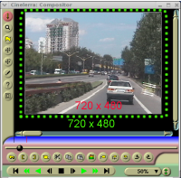
Proiektuaren irteera eta bideoaren
pista dimentsio berdinekin (720x480)
Pista baten tamaina aldatzean, bere itxura ere aldatu egingo da konposaketa-leihoan.
Pista txikiagotuz (640x400 tamainara) eta proiektuaren irteeraren tamaina aldatu gabe utziz, konposaketa-leihoan pista txikiagoa bistaratzen da, inguruan area hutsa duela.

Pista berria (640x400) proiektuaren
irteera (720x480) baino txikiagoa
Pista handituz (800x560 tamainara) eta proiektuaren irteeraren tamaina aldatu gabe utziz, konposaketa-leihoan pista handiagoa bistaratzen da. Irteeraren tamainara mozten da pista.

Pista berria (800x560) proiektuaren
irteera (720x480) baino handiagoa
Pistaren eta proiektuaren irteeraren tamainen arteko erlazioa erabiliz pista zehatz baten tamaina txikiagotu edo handitu dezakezu. Horrela (eta amaierako irteera kontutan izanik) zatitutako pantailak, panoramikoak edo zoomaren bezalako efektuak aplika ditzakezu konposatzailean.
Irteeraren tamaina ezartzeko bi bide daude: Fitxategia -> Berria menua erabiltzea proiektu berria sortzeko, edo Ezarpenak -> Formatua menuan. Baliabideen leihoan beste bide bat dago irteeraren tamaina aldatzeko. Saguaren eskuineko botoiarekin egin klik bideoaren klip batean, eta hautatu Doitu proiektuaren tamaina. Horrela irteera kliparen tamainara aldatuko da. Pista berriak sortzean, pisten tamainak beti egokituko dira metodo hauekin zehaztutako irteeraren tamainara.
Errendatzean, proiektuaren irteeraren tamaina amaierako bideoaren pistaren tamaina izango da, bertan errendatuko baita aldi bateko kanalizazioa.
Irteeraren tamaina aldi batekoarena baino handiagoa bada, orduan aldi batekotik transferitutako irudia irteerako pistak doituko da. Irteeran gelditzen den edozein leku hutsunearekin betetzen da.
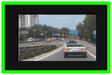
Irteeraren tamaina (berde kolorekoa) aldi batekoa baino handiagoa
Irteerako tamaina aldi batekoarena baino txikiagoa bada, aldi bateko bideotariko bat edo beste moztu egingo dira.

Irteeraren tamaina aldi batekoa baino txikiagoa
| [ << ] | [ >> ] | [Top] | [Contents] | [Index] | [ ? ] |
This document was generated by Raffaella Traniello on December, 31 2007 using texi2html 1.76.